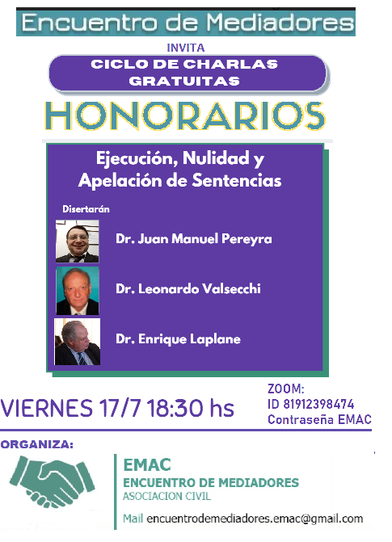

INICIO
Conocenos. Colaborá. Consultá. Contactanos.
Espacio de y para Mediadores en defensa de nuestros derechos
VIII ENCUENTRO DE MEDIADORES. INGRESA ACA
Últimas Noticias:
TALLER PRACTICO PARA MEDIADORES "ACTAS DE MEDIACION Y FIRMA ELECTRONICA"
Fecha: 2021-05-03 03:00
Mesas de Dialogo con invitados especiales
Fecha: 2020-12-15 19:00Que debatiremos en las comisiones?
Fecha: 2020-12-15 03:00

INVITACION Y FORMULARIO DE INSCRIPCION AL VIII ENCUENTRO DE MEDIADORES
Fecha: 2020-12-08 03:00Queridos colegas:
Tenemos el agrado de invitarlos a participar del VIII Encuentro de Mediadores, a celebrarse los días 17, 18 y 19 de diciembre de 2020, sobre la temática de “Mediación y Acceso a Justicia como política pública”.
Este espacio nació en el 2012 con el primer encuentro en Santa Teresita, y es un ámbito generado por y para mediadores en el cual nos reunimos para debatir entre todos, compartir experiencias y generar propuestas para afrontar dificultades y que aporten al crecimiento de la mediación.
Por ello, la principal modalidad de trabajo de estos encuentro es el trabajo en comisiones, donde todos los participantes podemos aportar nuestro conocimiento y vivencias en busca de propuestas superadoras, culminando con la elaboración de un documento que las recepte y se de a publicidad en todos nuestros ámbitos de trabajo
Las comisiones donde se puede participar son: 1) .Campos de acción y materias mediables, 2) Honorarios y el contexto judicial y 3) Mediación a distancia. También contaremos con mesas de diálogo con invitados especiales.
Aprovechando la posibilidad que nos da esta virtualidad impuesta, de reunirnos sin tener que movilizarnos físicamente, los esperamos en este espacio de dialogo y participación
Saludos a todos y esperamos poder encontrarnos pronto!
Comisiones del VIII Encuentro
Fecha: 2020-12-07 17:04Estos son los temas que debatiremos en las distintas comisiones
Inscribite! Completa el formulario aqui

Se viene el próximo encuentro de Mediadores!
Fecha: 2020-12-05 03:00
Te esperamos:
Mas información: click aqui
Inscripción: Completa el Formulario
"Hablando con Jueces sobre Mediación"
Fecha: 2020-08-27 03:00Ciclo de Charlas gratuitas de EMAC
"Hablando con Jueces sobre Mediación" Miércoles 26/8/2020
Jueces:
Rodrigo Bionda (AZUL) - Paulo Maresca (SAN MARTIN)
Moderadores: Javier Poggi - Silvina Caisson
Reiteramos el agradecimiento a los Dres. Rodrigo Bionda y Paulo A. Maresca, jueces del fuero civil y comercial de la Provincia de Buenos Aires, por haber compartido esta actividad y su vision innovadora con nosotros, y legitimar nuestra labor como mediadores.
Esto dijo en sus redes el Dr. Bionda sobre nuestra actividad:

CHARLA: Ejecución, nulidad y apelación de sentencias regulatorias de honorarios
Fecha: 2020-07-17 03:00Primera parte, sobre Ejecución de Honorarios a cargo del Dr. Juan Manuel Pereyra, mediador de Lomas de Zamora.
Segunda parte sobre NULIDADES, a cargo del Dr. Leonardo Valsecchi, mediador de Avellaneda - Lanus.
Tercera parte sobre APELACIONES, a cargo del Dr. Enrique Laplane, mediador de La Matanza.
Ciclo de CHARLAS GRATUITAS
Fecha: 2020-07-14 17:20Ejecución, nulidad y apelación de sentencias regulatorias por Zoom - 17/7/20 a las 18.30 hs

LA MEDIACIÓN, LAS AUDIENCIAS VIRTUALES Y LA MIRADA DE UN JUEZ
Fecha: 2020-07-08 03:00CONVERSACIÓN CON EL DR. PAULO MARESCA
Este jueves 8 de julio de 2020 en el marco del Ciclo de Conversaciones con jueces, organizado por E.M.A.C. (Encuentro de Mediadores), Asociación Civil, se llevó a cabo la conversación con el Dr. Paulo A. Maresca, titular del Juzgado 9 de 1º Instancia en lo Civil y Comercial del Departamento Judicial de General San Martín, sobre el tema: "LA MEDIACIÓN Y LAS AUDIENCIAS REMOTAS A LOS OJOS DE UN JUEZ".Agradecemos la oportunidad de haber escuchado sobre las nuevas dinámicas que despliega en su juzgado asi como también la mención del trabajo de los mediadores antes, durante y después de llevar adelante las audiencias, y la importancia de la mediación como elemento pacificador y de acceso a justicia, y que dicho trabajo esté bien remunerado.
Charla Virtual con la Dra. Lucia Vazquez - DPMARC
Fecha: 2020-06-01 03:00Directora de la Dirección Provincial de Métodos Alternativos de Resolución de Conflictos. a cargo del Instituto de Reformas Legislativas CAMDP (viernes 29/5/20) ENCUENTRO DE MEDIADORES·LUNES, 1 DE JUNIO DE 2020·
ASPECTOS CENTRALES
MEDIACIÓN A DISTANCIA
- Expuso los aspectos salientes del proyecto de ley que se esta discutiendo en la Legislatura Provincial, que modificaría algunos arts. de la ley de mediación, incorporando esta modalidad. (los aspectos relevantes del proyecto original puede verse aqui)
- Entre ellos, y atendiendo a un reclamo reiterado de los mediadores, la incorporación de materias mediables.
- La DPMARC esta trabajando ya en varios proyectos de la reglamentación de esa ley, teniendo en cuenta las distintas hipotesis y variables de como pueda resultar el debate parlamentario. (si es una medida transitoria por la cuarentena o si es una modalidad que continuará luego, etc), para que pueda ponerse en practica a la brevedad posible.
- Plataformas: Se aclaro que no se obligara al uso de una plataforma única, rigiendo la libertad de formas y de elección del mediador. Que resultaba preferible el uso de plataformas sencillas de usar desde los teléfonos celulares, ya que no todos los justiciables cuentan con computadoras. Y que se esta estudiando la eboracion de una plataforma propia del Ministerio de Justicia, para llevar adelante las mediaciones a distancia.
RETRIBUCION DEL MEDIADOR (HONORARIOS)
- En casi toda la exposición uso el término RETRIBUCIÓN, tal como Encuentro viene sosteniendo hace mucho tiempo, y enfatizó que los Mediadores somos trabajadores y como tales, nuestro trabajo, como el de cualquier trabajador debe ser REMUNERADO.
- Manifestó su preocupación por los fallos que establecen morigeraciones arbitrarias de honorarios, y que cuando el PE emite una norma es para que se cumpla. Y que si bien debe respetarse la independencia de poderes intentaran buscar dentro de ese marco soluciones para abordar la problemática. Ofrecio apoyo a los mediadores para argumentar sus apelaciones, para lo que se creara un “banco de fallos” en el Mediare, y la posibilidad de que los colegas que quieran puedan publicar sus trabajos académicos y doctrinarios.
- Explicó que el Decreto 43/19 contiene un error matemático que produce un desfasaje procentual de los honorarios de los mediadores cada vez que se lo aumenta, (del que oportunamente advertimos-) y por ese motivo la última modificación del decreto intenta corregir ese defecto. Y que inclusive se esta estudiando una propuesta de reforma legislativa para resolver ese problema, y volver a un esquema de “ius a ius” en lugar de una escala de “pesos a pesos” como la actual.
- Se esta estudiando el tema de los gastos administrativos de inicio, para evitar la disparidad que se esta dando en las distintas departamentales de la Provincia
CAPACITACION
- Sostuvo que ampliará la oferta de cursos gratuitos, incorporando mayor variedad de temas para satisfacer la demanda de capacitación de calidad más ajustada a la realidad, tal vez menos teórica y no sobre materias que no podemos mediar.
- Se revisarán las propuestas de cursos homologados que dictan las universidades y otras instituciones y sus aranceles y se modificara los programas de formación inicial.
MULTAS Y SUMARIOS.
- comento el trabajo que se viene realizando en la sistematizacion de la información que se encontraba dispersa en distintas dependencias y soportes, para reconstruir los legajos de los mediadores, y reactivar el cobro de multas. Se debe reestudiar el tema de sumarios y sanciones.
Un dato interesante fue cuando le preguntaron sobre la naturaleza jurídica del mediador y la mediación, se explayo sobre las diferentes teorías, y entre ellas menciono la sostenida por EMAC de que se trata de una función publica de gestión privada.
Por ultimo contesto preguntas que le acercaron los concurrentes, se comprometió a responder las que habían quedado pendientes.
Vemos con satisfacción que la DPMARC tenga en agenda y este abordando las problemáticas que desde hace mucho tiempo Encuentro de Mediadores y los mediadores venimos reclamando. Desde nuestra Asociación, seguiremos aportando nuestra experiencia, ideas y propuestas en favor de la mediación y los mediadores.
Informe de Gestiones sobre Retribución del Mediador
Fecha: 2018-09-11 18:20
ENCUENTRO DE MEDIADORES·MARTES, 11 DE SEPTIEMBRE DE 2018
El 25 de abril de 2017 el Comité de Gestión y Seguimiento de Encuentros de la Provincia de Buenos Aires se reunió con Director de Mediación y Composición, el Dr. Sergio C. Dos Santos, ocasión que se le agrego para su tratamiento dentro de esa Dirección el Proyecto de Honorarios consensuado por los mediadores en el VI Encuentro de Mediadores de la Provincia de Buenos Aires que contempla las reales necesidades de cobro de una retribución digna de los abogados-mediadores.
El Dr. Dos Santos formó expediente administrativo para su tratamiento, recibiendo el Nro. 21200-101668/17. En ese mismo Expte. se presentó posteriormente el Proyecto COLPROBA, con una escala que iba entre el 6 y el 10%.
El Colegio de Abogados de Lomas de Zamora, presentó un rechazo a la modificación de la escala propuesta por COLPROBA. El Colegio de Abogados de La Matanza también presentó nota de rechazo al proyecto COLPROBA. El Colegio de Abogados de Necochea planteo su disidencia al Proyecto COLPROBA, pero basado en que debía ajustarse a las normas del art. 730 CCyCN, y que la retribución debía ajustarse al verdadero trabajo efectuado.
En el mes de Octubre pedimos “Vista de Causa”, la cual no tuvo respuesta, vinieron la Jornadas Provinciales y se envió otra solicitud de Vista. No teniendo resultado con la DPMARC, se procedió ha averiguar donde se encontraba el mismo, visto que estaba en la secretaria General del Ministerio, se pidió al Sr. Ministro de Justicia, la correspondiente “Vista de Causa”. En esta oportunidad se nos comunicó que estaba disponible al efecto. Concurrimos a ver el Expediente, y logramos comprobar que habían dividido el mismo, aunque se mezclaban diversos temas y notas.
En el mes de marzo con el dictamen del Área Legal y Técnica del Ministerio, se había dado traslado a COLPROBA de la propuesta elaborada desde la Subsecretaria de Acceso a la Justicia de la Provincia de Buenos Aires conforme al mismo.
Ahora recibimos la noticia que existe el decreto 964/2018 Digitalizado, GDEBA-GPBA, con fecha 30 de Agosto de 2018, y aun no publicado
Siendo que somos los gestores iniciales de este Expediente sobre la Remuneración del Mediador, conforme a derecho se nos debió dar traslado del dictamen y de las presentaciones que realizo cualquier entidad dentro del mismo, por eso entendemos que podría existir nulidades con lo cual el mismo tendría vicios desde antes de su nacimiento.
La reacción inmediata fue el planteo del Rechazo del mismo, pues es un ataque directo a uno de los derechos humanos reconocido en el Art. 25 de la Declaración Universal de los Derechos Humanos y ratificado en el Art. 11 del Pacto Internacional de Derechos Económicos, Sociales y Culturales, el derecho Alimentario.
Nos oponemos pues ese Decreto viola principios de equidad al disminuir desproporcionalmente la retribución del mediador, obsérvese que la Mediación Previa Obligatoria, como fue concebida por la Ley 13951, es una actividad que le pertenece al Poder Ejecutivo, pero donde el Estado no sufre costo alguno, pues al delegar esa función en los Abogados Mediadores, estos cargan los costos del sistema.
En defensa de nuestros derechos comenzamos a circularizar la información logrando una reacción muy positiva de los Abogados- Mediadores, donde a modo de ejemplo en la web vía CHANGE, se obtuvo la adhesión de más de 1200 firmas, también vemos con agrado que distintos Colegios de Abogados de la Provincia de Buenos Aires, se solidarizaran y rechazan ese decreto, también una mención a otras sociedades intermedias que también se han solidarizado. Hoy estamos en el proceso de pedir reuniones con las autoridades, presentando las notas respectivas, tratando de evitar un conflicto no querido por nuestra parte.
Seguimos trabajando por y para los Mediadores y la Mediación en la Provincia de Buenos Aires.
Esas cosas que no te dicen... Nro. 1.
Fecha: 2018-09-11 16:09
- te pedimos que firmes por que:
- Te dijeron que el Dec. 964 modifica la base para el cálculo de tu RETRIBUCIÓN. El Dec. 2530/10 decía “A los fines de determinar la base sobre la que se aplicará la escala precedente, se tendrá en cuenta el monto del reclamo, acuerdo o sentencia, según corresponda, incluyendo capital e intereses”. - El Dec. 964/18 suprimió el “incluyendo capital e intereses” es decir desde su aplicación será solo capital.
- Nadie te dijo esto... por eso estamos nosotros defendiendo tus intereses, hacete escuchar.
Carta de la Asociacion de Abogados de 25 de Mayo respecto al decreto 964/18
Fecha: 2018-09-11 16:06Compartimos con uds. la carta que, en referencia al decreto 964/18 la Asociacion de Abogados de 25 de Mayo le hiciera llegar al Presidente del Colegio de Abogados de Mercedes, Dr. Mateo Laborde. en rechazo al decreto reglamentario, y adhiriendo a nuestra nota de repudio.
Leer mas...
COMO AVANZA NUESTRA CAMPAÑA?
Fecha: 2018-09-11 15:59
El rechazo generado por el decreto que reduce nuestros honorarios hizo que llegáramos a las 1200 firmas en 48 hs!!!
La contundente respuesta de los mediadores a esta iniciativa, ya obligo a varios colegios de abogados a tener que realizar reuniones de urgencia y expresar públicamente su rechazo.
Ayúdennos a seguir compartiendo esta campaña para hacer oir la voz de los mediadores ! https://chn.ge/2LPCdid
Tambien te invitamos a sumarte a Encuentro de Mediadores EMAC, para seguir defendiendo nuestros derechos, cada vez con mas fuerza y organización, . Completá este formulario https://goo.gl/forms/1O6pow6d2TpsiySD3
CUANTO NOS VA A DOLER?
Fecha: 2018-09-11 15:55FIRMA EL PETITORIO EN CHANGE.ORG
Fecha: 2018-09-11 15:51GOBERNADORA DE LA PROVINCIA DE BUENOS AIRES: REPUDIAMOS LA BAJA DE LOS HONORARIOS DE LOS MEDIADORES DE LA PROV. DE BS AS. -
¡Firmá la petición!
Nota de repudio al nuevo Decreto Reglamentario.
Fecha: 2018-09-11 15:44Congreso Mundial de Mediación
Fecha: 2018-07-18 16:18
Accede aca a la informacion sobre el Congreso Mundial de Mediación.
Nuevo fallo en la Sección Jurisprudencia.
Fecha: 2018-06-27 10:36Aplica los 9 ius, por falta de presentación de demanda, revoca los 4 ius fijados en primera instancia, basados en la aplicación de la ley 8904. Lomas de Zamora, Junio de 2018
Fallo Camara de Dolores rechaza inconstitucionalidad del art. 27 del Decr. 2530/10
Fecha: 2018-06-27 08:56{kind=link}
Compartimos con uds. este excelente fallo, que nos hiciera llegar la Dra. Viviana Peñoñori, a quien desde ya agradecemos, donde se rechaza la inconstitucionalidad de nuestros honorarios y se destaca la tarea del mediador, y la diferencia con el abogado de parte.
Nuevos fallos cargados en la Seccion Jurisprudencia
Fecha: 2018-06-16 17:44Fallo sobre extemporaneidad del planteo de inconstitucionalidad de los honorarios del mediador. 12/6/2018 - CACC MP S1 Leer mas